<!DOCTYPE html>
<html>
	<head>
		<meta charset="UTF-8" />
		<title>Autobuses Urbanos Alcalá</title>
		<link rel="stylesheet" href="https://unpkg.com/leaflet@1.7.1/dist/leaflet.css"
		integrity="sha512-xodZBNTC5n17Xt2atTPuE1HxjVMSvLVW9ocqUKLsCC5CXdbqCmblAshOMAS6/keqq/sMZMZ19scR4PsZChSR7A=="
		crossorigin=""/>
	  	<script src="https://unpkg.com/leaflet@1.7.1/dist/leaflet.js"
		integrity="sha512-XQoYMqMTK8LvdxXYG3nZ448hOEQiglfqkJs1NOQV44cWnUrBc8PkAOcXy20w0vlaXaVUearIOBhiXZ5V3ynxwA=="
		crossorigin=""></script>
		<link rel="stylesheet" href="styles/styles.css" />
		
		<!-- Plugins de Leaflet--> 
		<link rel="stylesheet" href="plugins/Control.MiniMap.css" />
		<script src="plugins/Control.MiniMap.js" type="text/javascript"></script>
		<link rel="stylesheet" href="plugins/L.Control.MousePosition.css" />
		<script src="plugins/L.Control.MousePosition.js" type="text/javascript"></script>
		<script src="plugins/Leaflet.Spain.WMS.js" type="text/javascript"></script>
		<script type='text/javascript' src="plugins/leaflet.almostover.js"></script>
		<script type='text/javascript' src="plugins/leaflet.geometryutil.js"></script>
		
		<!--Capas de GeoJson-->
		<script type="text/javascript" src="geojson/lineas.js"></script>
		<script type="text/javascript" src="geojson/linea_1.js"></script>
		<script type="text/javascript" src="geojson/linea_2.js"></script>
		<script type="text/javascript" src="geojson/linea_3.js"></script>
		<script type="text/javascript" src="geojson/linea_5.js"></script>
		<script type="text/javascript" src="geojson/linea_6.js"></script>
		<script type="text/javascript" src="geojson/linea_7.js"></script>
		<script type="text/javascript" src="geojson/linea_8.js"></script>
		<script type="text/javascript" src="geojson/linea_9.js"></script>
		<script type="text/javascript" src="geojson/linea_10.js"></script>
		<script type="text/javascript" src="geojson/linea_11.js"></script>
		<script type="text/javascript" src="geojson/municipios.js"></script>
		
	</head>
	<body>
		<div id="map"></div>
		<script>
		
		////<!--Ventanas del mapa-->		
			
		var osm2 = L.tileLayer('https://{s}.tile.openstreetmap.org/{z}/{x}/{y}.png', {
				maxZoom: 13,
				minZoom: 0,
				dragging: false,
				id: 'mapbox.streets',
				//accessToken: 'pk.eyJ1IjoiZ3VpZ25hciIsImEiOiJjanNtM2Y4dzkzMDZkNDl0YjFhZTJ0ZnlpIn0.NHivlvdA6l8lHKjftn_ULA'
			});
			
		var map = L.map('map', {
			center: [40.481902, -3.363946],
			zoom: 15,
			maxZoom: 18,
			minZoom: 14,
			maxBounds: [[40.38, -3.5],[40.58, -3.24]],
			zoomControl: false,
		});
		
		var osm = L.tileLayer('https://{s}.tile.openstreetmap.org/{z}/{x}/{y}.png', {
				attribution: 'Map data &copy; <a href="https://www.openstreetmap.org/">OpenStreetMap</a> contributors, <a href="https://creativecommons.org/licenses/by-sa/2.0/">CC-BY-SA</a>, Imagery © <a href="https://www.mapbox.com/">Mapbox</a>',
				dragging: false,
				id: 'mapbox.streets',
				//accessToken: 'pk.eyJ1IjoiZ3VpZ25hciIsImEiOiJjanNtM2Y4dzkzMDZkNDl0YjFhZTJ0ZnlpIn0.NHivlvdA6l8lHKjftn_ULA'
			}).addTo(map);	
		
		mapas_base = {"Open Street Map": osm, "PNOA":Spain_PNOA_Ortoimagen};
		
		var paradas = L.tileLayer.wms('http://localhost:8080/geoserver/wfs/paradas?service=WMS&', {
				layers: 'paradas_bus_OSM',
				format: 'image/png',
				transparent: true,
				}).addTo(map);	
				
		//<!--Estilos de GeoJson-->

		var municipiosStyle_2 = function(feature) {
			switch (feature.properties.Nombre_Mun) {
				case "Alcalá de Henares" : return {"color":"#ffffff", "opacity": 0};
				default: return {
					"color": "#ce6767",
					"weight": 1,
					"opacity": 0.7,}
		}};
		
		var municipiosStyle = {
			"color": "#ce6767",
			"weight": 1,
			"opacity": 0.7,
		};
		
			//<!--FUNCION PARA ASIGNAR LOS COLORES A LAS LINEAS-->
		var estilo_lineas = function (feature) {
			switch (feature.properties.id) {
				case "1A": return {color: "#FF0000"};
				case "1B": return {color: "#FF0000"};
				case "2": return {color: "#C7A0CA"};
				case "3": return {color: "#FEB811"};
				case "5": return {color: "#AAE1FA"};
				case "6": return {color: "#FFDD00"};
				case "7": return {color: "#0071BB"};
				case "8": return {color: "#5DA9DD"};
				case "9": return {color: "#92715E"};
				case "10": return {color: "#FEE5B7"};
				case "11": return {color: "#8C63AA"};
			}};
			
			//<!--FUNCION PARA ASIGNAR LAS IMAGENES A LAS LINEAS-->
		var imagen_linea = function (feature) {
			switch (feature.properties.id) {
				case "1A": return '<br><a href="carteles/1.jpg">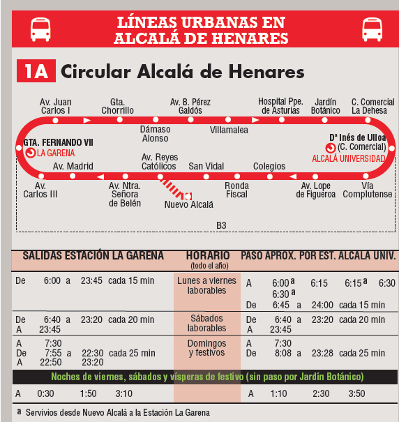</a>';
				case "1B": return '<br><a href="carteles/1.jpg">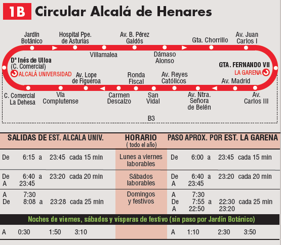</a>';
				case "2": return '<br><a href="carteles/2.png">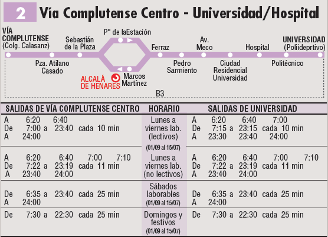</a>';
				case "3": return '<br><a href="carteles/3.png">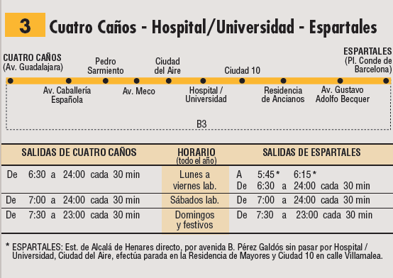</a>';
				case "5": return '<br><a href="carteles/5.png">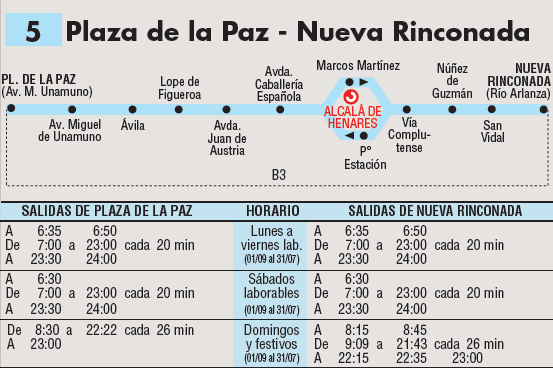</a>';
				case "6": return '<br><a href="carteles/6.png">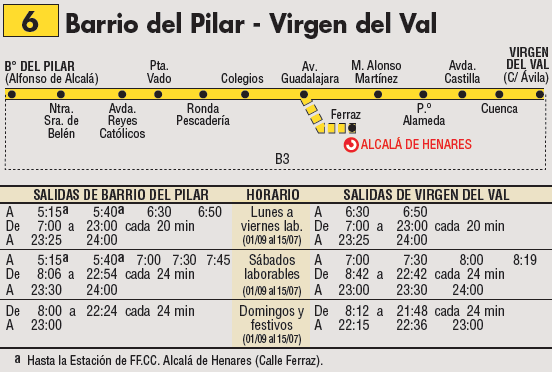</a>';
				case "7": return '<br><a href="carteles/7.png">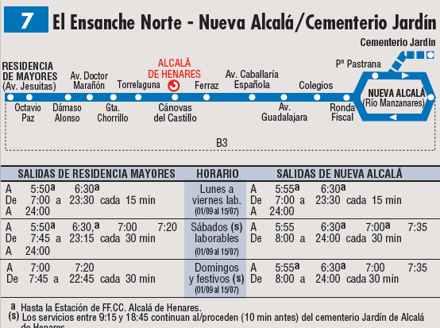</a>';
				case "8": return '<br><a href="carteles/8.png">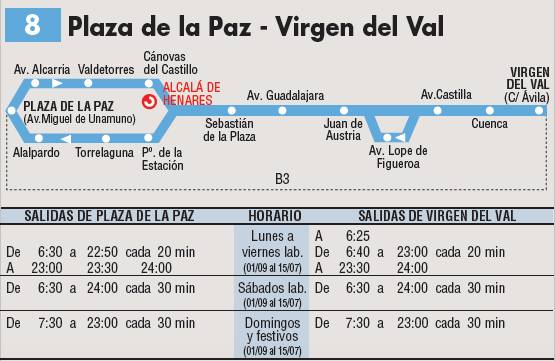</a>';
				case "9": return '<br><a href="carteles/9.png">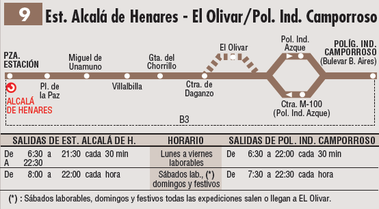</a>';
				case "10": return '<br><a href="carteles/10.png">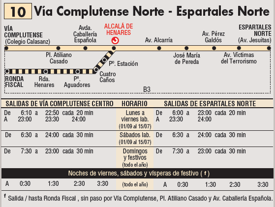</a>';
				case "11": return '<br><a href="carteles/11.png">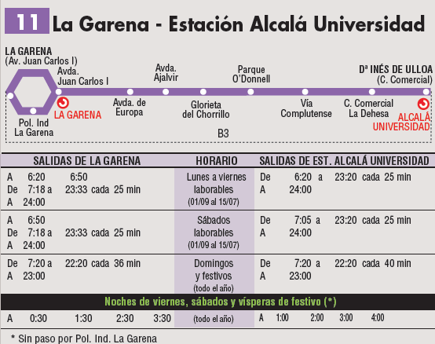</a>';
			}};			
			
		//<!--Capas GeoJson---->
		var linea_2 = L.geoJson(linea_2, {style: estilo_lineas, onEachFeature: popup}).addTo(map);
		var linea_3 = L.geoJson(linea_3, {style: estilo_lineas, onEachFeature: popup}).addTo(map);
		var linea_5 = L.geoJson(linea_5, {style: estilo_lineas, onEachFeature: popup}).addTo(map);
		var linea_6 = L.geoJson(linea_6, {style: estilo_lineas, onEachFeature: popup}).addTo(map);
		var linea_7 = L.geoJson(linea_7, {style: estilo_lineas, onEachFeature: popup}).addTo(map);
		var linea_8 = L.geoJson(linea_8, {style: estilo_lineas, onEachFeature: popup}).addTo(map);
		var linea_9 = L.geoJson(linea_9, {style: estilo_lineas, onEachFeature: popup}).addTo(map);
		var linea_10 = L.geoJson(linea_10, {style: estilo_lineas, onEachFeature: popup}).addTo(map);
		var linea_11 = L.geoJson(linea_11, {style: estilo_lineas, onEachFeature: popup}).addTo(map);
		var linea_1 = L.geoJson(linea_1, {style: estilo_lineas, onEachFeature: popup}).addTo(map);
		lineas = {"Paradas:": paradas , "Línea 1: Circular": linea_1, "Línea 2: Vía Complutense - Universidad (Politécnico)": linea_2, "Línea 3: Puerta de los Mártires - Espartales": linea_3, "Línea 5: Nueva Rinconada - Plaza de la Paz": linea_5, "Línea 6: Barrio del Pilar - Virgen del Val": linea_6, "Línea 7: Nueva Alcalá - El Ensanche": linea_7, "Línea 8: Virgen del Val - Plaza de la Paz": linea_8, "Línea 9: Estación F.F.C.C. - El Olivar - Polígono industrial Camporroso": linea_9, "Línea 10: Espartales Norte - Vía Complutense (Centro)": linea_10, "Línea 11: La Garena - Estacion de Alcala Universidad": linea_11};
		
		L.geoJson(municipios, {style: municipiosStyle_2}).addTo(map);
		
		//<!--Pop up para las capas GeoJson-->
		function popup (feature, layer) {
			if (feature.properties && feature.properties.id) {
			layer.bindPopup(feature.properties.name+"<a><br></<>"+imagen_linea(feature));
			}
		};			
		//<!--Título-->
		var title = L.control();
		
		title.onAdd = function (map) {
			var div = L.DomUtil.create('div', 'info');
			div.innerHTML +=
			'<h2>Alcalá de Henares</h2>Nuevas líneas de autobus urbano, febrero de 2019: <br><br><a href="https://www.crtm.es/tu-transporte-publico/otros-autobuses-urbanos/lineas.aspx"></a>&nbsp;&nbsp;&nbsp;&nbsp;<a href="http://ayto-alcaladehenares.es/portalAlcala/contenedor1.jsp?seccion=s_floc_d4_v1.jsp&tipo=1&&contenido=1153&nivel=1400&layout=contenedor1.jsp&codResi=1&language=es&codMenu=379&codMenuPN=2&codMenuSN=195"></a><br><br>Creado por: Guillermo Acero Espina'
			;
			return div;
		};
		
		title.addTo(map);

		//<!--Controladores y plugins-->
		
			//<!--Plugin AlmostOver-->
		map.almostOver.addLayer(linea_1);
		map.almostOver.addLayer(linea_2);
		map.almostOver.addLayer(linea_3);
		map.almostOver.addLayer(linea_5);
		map.almostOver.addLayer(linea_6);
		map.almostOver.addLayer(linea_7);
		map.almostOver.addLayer(linea_8);
		map.almostOver.addLayer(linea_9);
		map.almostOver.addLayer(linea_10);
		map.almostOver.addLayer(linea_11);

		  var circle = L.circleMarker([0, 0], {radius: 5, fillColor: 'white', fillOpacity: 1});

		  map.on('almost:over', function (e) {
			map.addLayer(circle);
			e.layer.setStyle({estilo_lineas});
		  });

		  map.on('almost:move', function (e) {
			circle.setLatLng(e.latlng);
		  });

		  map.on('almost:out', function (e) {
			map.removeLayer(circle);
			e.layer.setStyle({weight: 3});
		  });

		  map.on('almost:click', function (e, pop) {
			e.layer.setStyle({weight: 7}).bringToFront().bindPopup(feature.properties.id).openPopup();
			pop.layer.bindPopup("Popup si click");
		  });
			//<!--Fin de AlmostOver-->
		
		var cambioe = new L.Control.Zoom({position: 'topright'});	//<!--Botones de cambio de escala-->
		cambioe.addTo(map);
		
		var mouse = new L.control.mousePosition();	//<!--Coordenadas del ratón-->
		mouse.addTo(map);
		
		var barra_escala = new L.control.scale({imperial: false});	//<!--Barra de escala-->
		barra_escala.addTo(map);

		var controlador = new L.control.layers(mapas_base, lineas);
		controlador.addTo(map);
		
		//<!-- Minimapa-->
		var miniMap = new L.Control.MiniMap(osm2, {toggleDisplay: true});
		miniMap.addTo(map);

		</script>
	</body> 
</html> 